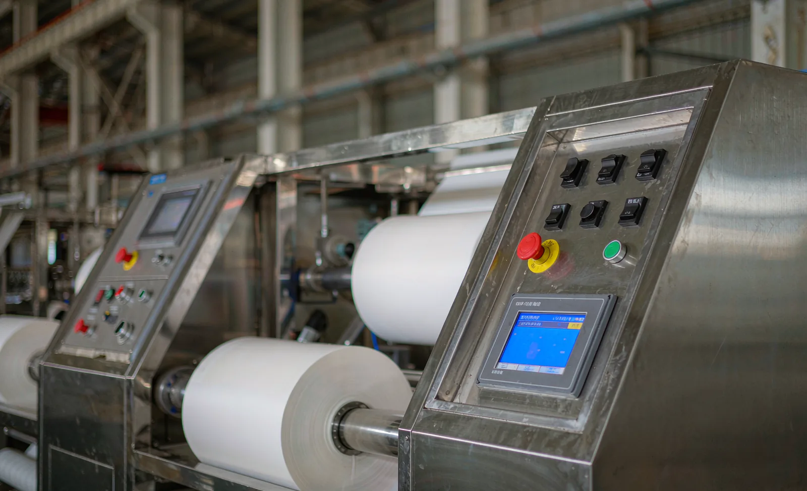
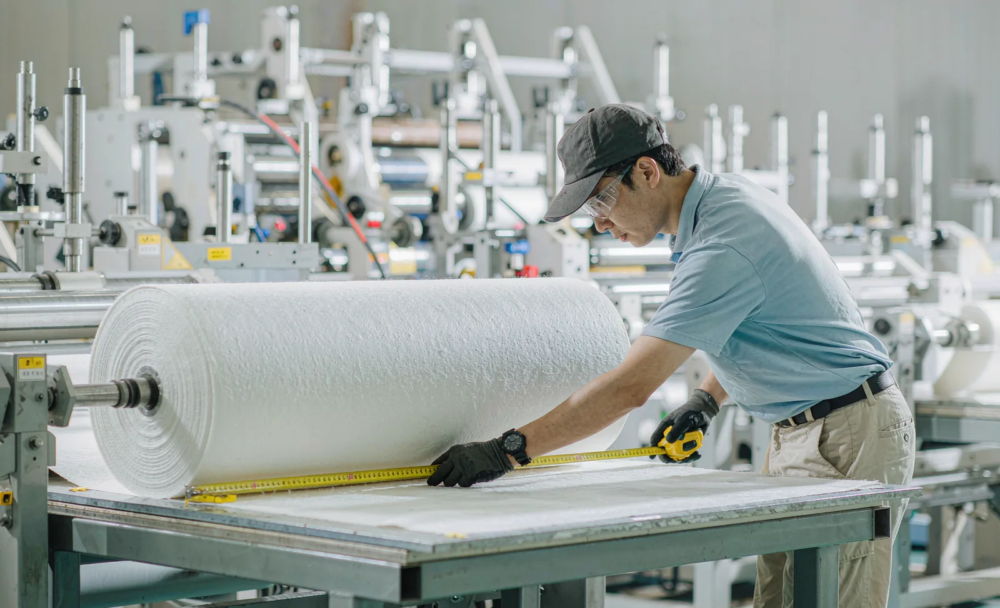

Published October 25, 2026 | By HDPTH Technical Editorial Team

In most converting plants, every finished roll leaves with a length figure printed on its label, and that figure flows straight into invoicing, material planning and customer claims. When the counter over-reads, the plant ships material it has not been paid for; when it under-reads, customers receive short rolls and the difference surfaces as complaints or chargebacks. Yet length metering rarely appears as a named specification in purchase negotiations — it hides inside the HMI description or is assumed to be exact because the number has four digits. This guide treats length count accuracy as what it is commercially: a measurable performance figure with defined error sources, contractual limits and a verification method, comparable in standing to the speed and tension figures covered in our line speed specification guide.
How length metering works on a slitter rewinder
Two measurement principles dominate. The first is machine-axis metering: an encoder on a drive shaft or motor feeds pulses to the PLC, which converts revolutions into web length using an assumed web path and roll geometry. This costs little and never slips — but it measures the machine, not the web. Everything that happens between the drive point and the rewinding shaft is invisible to it. The second principle is surface metering: a dedicated metering roller, driven by the web itself through a defined nip and fitted with its own rotary encoder, measures how much surface has actually passed. Because the roller touches the web, delivered length is measured where it happens, and errors from slip on idlers, diameter assumptions and web stretch upstream are largely excluded. Most machines above entry level can be fitted with a metering station; the buyer’s decision is whether the accuracy of the count justifies it — and for plants selling by the metre, it usually does.
Where length counting errors come from
The error budget is dominated by systematic, material-dependent effects rather than random electronics noise. Web slip over idler rollers adds or removes length depending on bearing friction and wrap angle. Elastic webs — the stretched nonwovens and films discussed in our elastic web tension guide — are longer under tension than at rest, so the counter records stretched length while the customer measures relaxed length. Thin materials compress under the metering nip, shifting the effective roller circumference. Upstream, a wrong parent roll diameter assumption skews machine-axis counts for the whole run. Finally, the cut-to-length function itself contributes: a machine that stops the preset from full speed without a controlled pre-count deceleration overruns the target by a repeatable amount that the counter dutifully ignores. None of these effects is exotic; all of them are measurable, and that is exactly why they belong in a specification instead of in a service call.

Specifying length accuracy in the purchase contract
A usable length specification has four elements. First, the measurement point: state whether the accuracy figure applies to a surface-contacting metering roller or to the machine axis, because the same machine can honestly quote two very different numbers. Second, the accuracy itself, expressed in percent of indicated length and quoted per material — a count that holds ±0.2 percent on 80 gsm spunlace may drift beyond that on a thin elastic laminate. Third, the calibration procedure: the operating manual should describe how the correction factor is determined against a calibrated reference length, and the control system should store a separate factor per recipe, so switching products restores the right correction automatically, in line with the recipe discipline described in our recipe management guide. Fourth, the stopping function: if the machine cuts or stops at preset length, require a defined pre-count deceleration and a stated stopping tolerance, so a preset of 1,000 metres does not quietly become 1,008. Suppliers who meter honestly will quote these figures without hesitation; a refusal to state a measurement point is itself useful information.
Verifying length count at FAT and SAT
Verification is straightforward and should be written into the acceptance plan alongside the edge quality and roll hardness checks. At the factory acceptance test, run each representative material at production speed to a preset length, then measure the actual web length with a calibrated tape on a flat table, giving the web time to relax before measurement — the same discipline used for the acceptance figures in our FAT checklist guide. Repeat across the speed range, because a count that is accurate at 100 m/min can drift at maximum speed if the metering nip loses contact. At the site acceptance test, repeat the runs on the buyer’s floor, where upstream roll stock, climate and tension settings differ from the supplier’s hall. Record indicated versus measured length for every run in the protocol. Deviations within the contractual figure confirm the specification; deviations outside it become documented findings with a clear owner, typically resolved by recalibrating the scaling factor or correcting the metering point — not by adjusting the operator’s technique. A plant that runs this verification once per material class will also detect metering roller wear long before customers do.
Length metering connects directly to the wider subject of speed, drive and measurement quality covered in our line speed specification guide, and the stopping-side behaviour — cutting at a defined position rather than a defined length — is treated in our cut-to-register slitting guide. For machines configured around these functions, see the high-speed slitting machines range, where metering stations, recipe-stored calibration and pre-count deceleration are available options.
Buying rolls or materials by the metre?
Send HDPTH your materials and the length accuracy you need to invoice against. We will specify the metering configuration, calibration procedure and acceptance method for your machine, and support the verification runs at FAT and SAT so the number on the label survives audit.
Submit Your Project InquiryFrequently asked questions
What length count accuracy can a slitter rewinder realistically achieve?
A well-specified machine with a dedicated metering nip roller measures delivered length to within about ±0.1 to ±0.3 percent under normal operating conditions. Accuracy measured against machine-axis encoders alone, without surface contact with the web, is typically worse on finished rolls because slip, stretch and thickness variation between the drive point and the rewinding shaft are added on top. The realistic figure depends on the material, so the count accuracy specification should be quoted per material, not as a single machine-wide number.
Is a machine-axis encoder enough, or is a metering roller required?
A machine-axis encoder measures how much the drive system has turned, not how far the web has travelled. Between the drive point and the rewind, the web can slip over idlers, stretch under tension, or ride at a different diameter than assumed. A dedicated metering roller with its own encoder, pressing on the web in a controlled nip, measures the actual delivered surface and removes most of those error sources. For buyers who invoice or order material by length, the metering roller is the safer configuration.
Why do length counts drift most on thin and elastic materials?
Thin films and nonwovens compress under the metering nip, so the measured circumference differs from the free-web circumference; elastic webs stretch under tension and relax afterwards, so delivered length and final roll length differ even with a perfect counter. Both effects are systematic rather than random, which means they can be characterised and corrected with a material-specific calibration factor entered in the recipe, as long as the calibration procedure is part of the delivered documentation.
What length accuracy requirements should buyers put in the contract?
Specify the count accuracy in percent of indicated length for each material to be run, name the measurement point (metering roller, not machine axis), state whether the figure applies at production speed, and require a documented calibration procedure in the operating manual. Add that each stored recipe carries its own calibration factor, and that the cutting or stopping function holds its pre-count deceleration so the machine stops within the stated tolerance of the preset length.
How is length count accuracy verified at acceptance?
Run a preset length at production speed for each representative material, then measure the actual web length with a calibrated tape or certified linear measurement on a flat table, allowing the web to relax first. Compare measured against indicated length across several repeats and across the speed range. Record the deviations in the acceptance protocol; if the deviation exceeds the contractual figure, the correction is a recalibrated scaling factor or a metering point correction, not an argument about the operator’s technique.